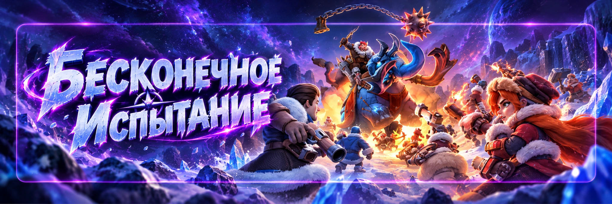

Бесконечное испытание
Автор - Sova
«Бесконечное испытание» - постоянная ежедневная активность против Вульфгара, Повелителя ветров. Здесь губернатор атакует Вульфгара одиночным отрядом и пытается нанести как можно больше урона за одну атаку.
Главная особенность: количество атак не ограничено, а для рейтинга имеет значение лучший одиночный удар.
Когда появляется Вульфгар
Вульфгар появляется в тундре ежедневно. Обычно новая ежедневная сессия начинается примерно после 00:30 UTC.
После ежедневного обновления начинается новый рейтинг и можно снова улучшать результат текущего дня.
Атаковать можно сколько угодно
Теперь можно снова и снова менять героев, проверять снаряжение, активировать подходящие бонусы и искать максимально сильную комбинацию.
- Меняйте одного героя и сравнивайте результат.
- Меняйте всю тройку, если хотите проверить другой подход.
- Переставляйте снаряжение и Виджеты.
- Повторяйте один и тот же состав несколько раз.
- После прокачки сразу проверяйте новый рекорд.
Рейдов нет
Вульфгар атакуется только одиночно. Нельзя создать рейд, присоединиться к чужому рейду или использовать союзников для совместного удара.
Ежедневное участие
У события есть ежедневные награды за участие. Сначала выполняйте необходимое количество атак, указанное в текущем окне ежедневных заданий, и забирайте награду.
После этого дополнительные атаки можно использовать уже для рейтинга, новых порогов урона и тестирования героев, снаряжения и бонусов. Количество атак при этом не ограничено.
Как считается рейтинг
В рейтинг идёт самый сильный одиночный удар за день.
500 млн → 620 млн → 590 млн → 710 млн → 680 млн
Результат дня: 710 млн. Урон предыдущих атак не складывается.
Награды за урон
Кроме ежедневного рейтинга есть награды за достижение определённых порогов урона. По мере развития аккаунта можно возвращаться к Вульфгару и постепенно открывать более высокие результаты.
Пробуйте снова после повышения звёзд героя, навыков, снаряжения, Виджетов, питомцев или общего усиления аккаунта.
Состав войск формируется автоматически
В «Бесконечном испытании» нельзя вручную выставить привычное соотношение Пехоты, Копейщиков и Стрелков. Поэтому схемы вроде 10 / 10 / 80 или 10 / 30 / 60 здесь не используются.
Главное решение игрока - каких 3 героев взять.
Не берите героев только по поколению
Новейшие герои не обязаны автоматически давать лучший результат. Старый герой может оказаться сильнее, если у него больше звёзд, лучше прокачаны нужные навыки, сильнее снаряжение или выше Виджет.
Состав нужно проверять ударами, а не выбирать только по поколению.
Теперь тестировать намного удобнее
После снятия лимита атак можно нормально сравнивать героев.
Состав 1: Герой А + Герой Б + Герой В
Сделайте несколько атак и запомните лучший результат.
Состав 2: Герой А + Герой Б + Герой Г
Снова выполните несколько атак.
Так становится понятно, какой именно герой действительно увеличил урон.
Меняйте по одному герою
Для точного теста лучше не менять всю тройку сразу.
А + Б + В → заменяем только В → А + Б + Г → сравниваем несколько ударов.
Если результат вырос, продолжаем проверять эту комбинацию. Теперь попытки не ограничены, поэтому можно тестировать спокойно.
Один удар не показатель
Одинаковая тройка героев может показать разный результат в нескольких атаках из-за срабатывания навыков и последовательности эффектов.
Лучше сделать несколько ударов одним составом и сравнивать лучшие результаты.
Смотрим на экспедиционные навыки
Особое внимание уделяйте навыкам, которые работают в экспедиционном бою. Полезными могут быть эффекты на атаку, урон, смертоносность, ослабление противника, защиту, снижение входящего урона и усиление в течение боя.
Защита тоже может быть полезна
Вульфгар отвечает вашему отряду. Если войска дольше остаются в бою, они успевают нанести больше урона.
Поэтому при тестировании не стоит смотреть только на атаку. Иногда комбинация с лучшей выживаемостью показывает более высокий итоговый результат.
Снаряжение героев
Перед серьёзными тестами проверьте снаряжение трёх выбранных героев: уровень предметов, усиление, мастерство, распределение лучших комплектов и Виджеты.
Особенно если этот герой используется на Медведе, в PvP, на Арене или в других событиях.
Виджеты
Эксклюзивное снаряжение героя тоже может изменить результат. Сравнивайте не только самого героя, но и связку: герой + текущий Виджет + навыки + снаряжение.
Питомцы
Некоторые активные навыки питомцев могут помогать в испытании. Перед попыткой на личный рекорд проверьте доступные навыки, длительность эффекта и активируйте подходящий бонус.
Поскольку количество атак не ограничено, нет необходимости тратить бонус питомца на первые пробные составы. Сначала найдите хорошую тройку, затем включайте усиления.
Дополнительные бонусы
На результат могут влиять некоторые специальные бонусы события и государства. При этом обычные городские боевые усиления не стоит автоматически расходовать только ради Вульфгара.
Лучший способ проверить бонус: сделать несколько атак до его включения и несколько после.
Как найти лучшую тройку
- Возьмите предполагаемо сильнейшую тройку и сделайте несколько ударов.
- Запишите лучший урон.
- Замените одного героя.
- Сделайте ещё несколько ударов.
- Сравните лучший результат.
- Если стало лучше, оставьте нового героя и проверяйте следующую позицию.
Проверяйте старых прокачанных героев
Для 58 государства это особенно полезно. Не списывайте хорошо развитого старого героя только потому, что появился новый.
Если у старого героя высокая звёздность, полностью развитые навыки, сильный Виджет и хорошее снаряжение, обязательно протестируйте его.
После каждой крупной прокачки пробуем снова
Возвращайтесь к тестам после новой звезды героя, повышения навыков, улучшения снаряжения, прокачки Виджета, усиления питомца или крупного развития аккаунта. Ваш лучший состав может измениться.
Зачем нужны неограниченные атаки
Теперь Вульфгара можно использовать как бесплатный боевой полигон.
- Проверять разных героев.
- Сравнивать влияние навыков.
- Тестировать перестановку снаряжения.
- Сравнивать Виджеты.
- Проверять активные навыки питомцев.
- Сравнивать временные бонусы.
И не нужно бояться потратить ограниченные попытки: такого ограничения больше нет.
Когда можно остановиться
Неограниченные атаки не означают, что нужно весь день бить Вульфгара. Можно остановиться, когда ежедневные награды получены, текущая лучшая тройка найдена, новый порог пока слишком далеко или улучшить рейтинг без новой прокачки не получается.
Для F2P и небольшого доната
- Каждый день получить ежедневную награду.
- Сделать несколько тестовых атак и посмотреть лучший результат.
- После серьёзной прокачки снова проверить героев.
- Попробовать новый рекорд и следующий порог достижения.
- Не тратить универсальные мифические фрагменты только ради рейтинга Вульфгара.
- Не прокачивать ненужного героя исключительно ради одного события.
- Не расходовать редкие материалы без пользы для общего развития аккаунта.
Рейтинг
За высокий лучший удар можно получить место в ежедневном рейтинге. Но рейтинг - дополнительная часть события.
Сначала полезная прокачка аккаунта, и только потом попытка улучшить рейтинг.
Нужен свободный марш
Каждая атака использует марш. Если все очереди заняты сбором, другими активностями, рейдами или гарнизонами, нужно освободить одну очередь.
После возвращения отряда можно сразу отправлять следующую атаку.
Удобная ежедневная схема
- Найти Вульфгара.
- Забрать ежедневные награды за необходимое участие.
- Выбрать базовую тройку.
- Сделать несколько ударов.
- Запомнить лучший результат.
- Менять по одному герою.
- Найти сильнейшую комбинацию.
- При необходимости включить питомца и другие подходящие бонусы.
- Попробовать новый личный рекорд.
Частые ошибки
- Продолжать считать, что доступно только 30 атак.
- Беречь «попытки», которых теперь нет.
- Путать лучший удар с суммой всех атак.
- Пытаться открыть рейд.
- Искать ручную пропорцию войск.
- Автоматически брать только новое поколение героев.
- Делать вывод после одного удара.
- Полностью менять всю тройку и не понимать, что улучшило результат.
- Смотреть только на атаку и игнорировать выживаемость.
- Забывать про снаряжение и Виджеты.
- Использовать сильные временные бонусы до того, как найдена хорошая тройка.
- Переставить экипировку для теста и забыть вернуть её обратно.
Количество атак не ограничено.
Вульфгара атакуем только одиночно.
Рейды недоступны.
В рейтинг идёт лучший одиночный удар.
Войска формируются автоматически.
Главный выбор - 3 героя.
Можно спокойно тестировать разные составы сколько угодно.
Один удар не показатель, один состав лучше проверить несколько раз.
Старый хорошо прокачанный герой может оказаться сильнее нового.
Снаряжение и Виджеты имеют значение.
Подходящие активные навыки питомцев лучше использовать уже после выбора сильной тройки.
После каждой крупной прокачки пробуем установить новый рекорд.
Главный принцип: БЕЙТЕ НЕ БОЛЬШЕ, А УМНЕЕ. Теперь попыток сколько угодно, поэтому ищем именно лучшую тройку.